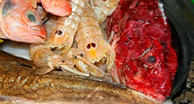

Caldo de pescado (que no fumet), especial para todo tipo de arroces
Pescados de Roca, Galeras, Verduras

| Morralla | 1 Kg. |
| Galeras | 500 gr. |
| Cebolla | 1 un. |
| Puerro | 1 un. |
| Zanahoria | 1 un. |
| Apio | 1 rm. |
| Tomate muy maduro | 5 un. |
| Laurel | 1 hj. |
| Ajos | 6 dt. |
| Aceite de oliva | 100 ml. |
| Agua mineral | 2 l. |
| Sal | 5 gr. |
| Pimienta en grano | 12 un. |
-
Berenjena/Conejo
- Precalentar el horno a 180º.
- Ir calentando suavemente los dos litros de agua.
- Limpiar el pescado (tripa y agallas), desescamarlo, lavarlo bien y secarlo con papel absorbente.
- Cubrir una bandeja de horno con papel de aluminio, disponer el pescado encima, rociar con aceite y salar ligeramente.
- Introducir en el horno aproximadamente 15 min. o hasta que este ligeramente dorado. Retírar y reservar.
- Cortar cebolla, puerro, zanahoria y apio en mírepoix. Aplastar los dientes de ajo.
- Cortar las galeras por la mitad en sentido longitudinal. Pasarlas por la sartén con una gota de aceite hasta que tomen color. Reservar.
- Cortar el tomate maduro en cubos de 1 cm. de lado.
- En una olla con un poco de aceite rehogar las verduras y los ajos durante 5 min.
- Añádir los ajos, el laurel y los granos de pimienta. Rehogar 2 min más.
- Subir la potencia del fuego y agregar las galeras, hacer que tomen color rápidamente durante 5 min.
- Añadimos el tomate y cocemos todo el contenido 5 min más.
- Añádir el agua caliente, llevar a hervor todo el contenido y una vez arranque el hervor tirar el pescado asado.
- Llevar otra vez a ebullición y cuando levante, cocer todo durante 15 min a fuego medio. Al finalizar la cocción rectificar de sal.
- Retírar del fuego, dejar reposar unos minutos y pasar por un colador chino. Mantener en caliente.
- Si es necesario volver a rectificar otra vez de sal. Acabado/Sugerencia
- Si sobra caldo de pescado, dejarlo enfriar naturalmente, una vez a temperatura ambiente guardarlo en nevara o congelarlo.